Vancouver Month-long Challenge
From November 9th, I began the month-long map making challenge. I will finish it on December 8th, 2022. I wanted to explore the methods of mapping using either R or python only. Some of the maps have been better than other. I am cataloging here the better maps.
December 4, 2022 - Heritage Sites in Vancouver

December 3, 2022 - Average Land Surface Temperature during Summer 2022 in Vancouver
After calculating the land surface temperature from all available cloud-free Landsat pixels(Ermida, et al., 2020) between June 1 and September 30, 2022, a mean summer image was produced. There are visible outliers, which after closely examining all of the imagery within each of those regions, are areas with cloud or aerosol interfearance, which would have been largely masked.
https://doi.org/10.3390/rs12091471

December 2, 2022 - Contour Map of Wreck Beach
I wanted to visualize the ascent every time you come back from Wreck Beach. The map was produced using the ggplot2 package in R and the orthoimagery was acquired from the Vancouver Open Data Portal and the contours were calculated from the DEM using LiDAR data from LiidarBC.

December 1, 2022 - Supervised Classification of the Vancouver Area
For this map, I was experimenting with supervised classifications in Google Earth Engine, and thought that I would run my own using 30 pixels for each category (urban, vegetated, water). For urban pixels, I was looking for varied types of impervious surfaces. For vegetated surfaces, I was trying to get a mix of surfaces ranging from forested (Pacific Spirit Park), streets with majority canopy coverage, grass, and soil.
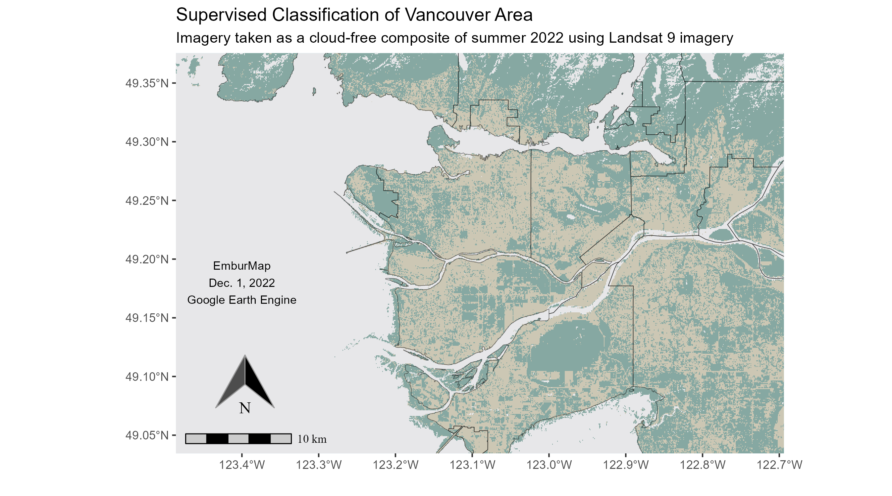
November 30, 2022 - Reported Crimes in Vancouver (October 2022)
This one is from an idea that was introduced to me by u/xlxoxo. If you like this map, it would be very easy for me to collect the data and run it through this script and map all of their future monthly data and post here.
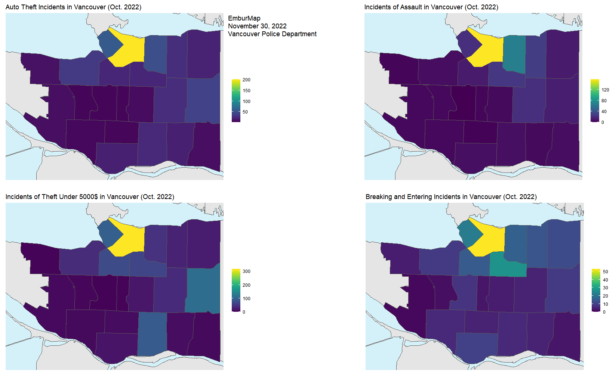
November 29, 2022 - Linear Regression of Annual Mean Nightlights in Vancouver (1992-2013)
This map uses data from the U.S. Air Force Defense Meteorological Satellite Program (DMSP) Operational Line-Scan System (OLS) Version 4. Using their cloud-free average of the visible band's digital number values (values ranging between 1 and 63), I performed a linear regression on annual averages between 1992 and 2013. The resulting map presents the slope of the linear regression. Areas with positive values indicate areas experiencing increased night light activities.

November 28, 2022 - Coastal and Still Creek Floodplain in the City of Vancouver
This one shows the designated floodplains in Vancouver. From the Vancouver Open Data Portal, "The coastal floodplain is the area that could flood in Vancouver due to a major storm (1:500 year storm), 1 metre of sea level rise and 0.6 m of freeboard should no interventions take place. The Still Creek floodplain shows the areas subject to overland flooding due to the creek overflowing."
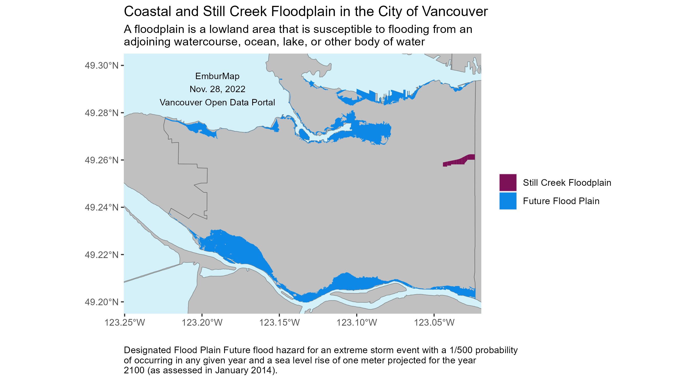
November 27, 2022 - Road Work in Vancouver (As of November 27, 2022)
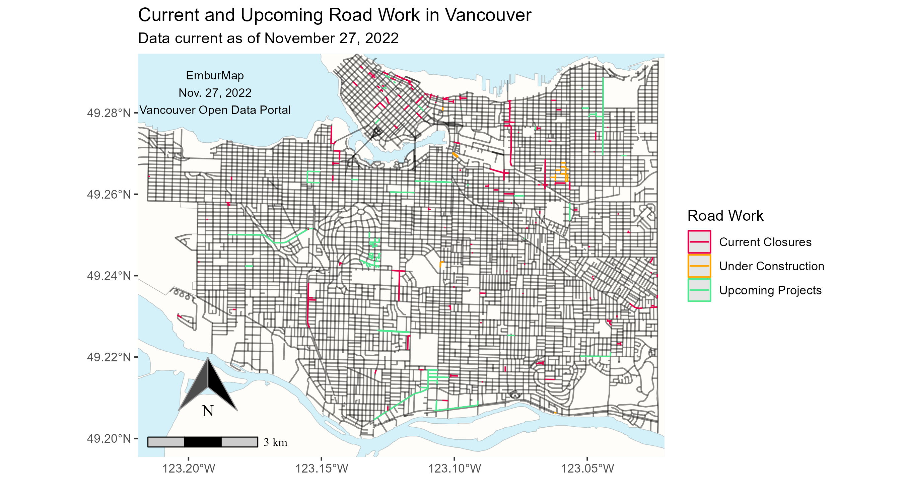
November 26, 2022 - Monkey Puzzle Trees on the streets of Vancouver
This one shows the distribution of one of my favourite trees, the Monkey Puzzle Trees, in Vancouver Streets. I tried configuring the icon to make the white background transparent, but it make it harder to locate the trees, and I was determined to use an icon rather than a point to mark them.
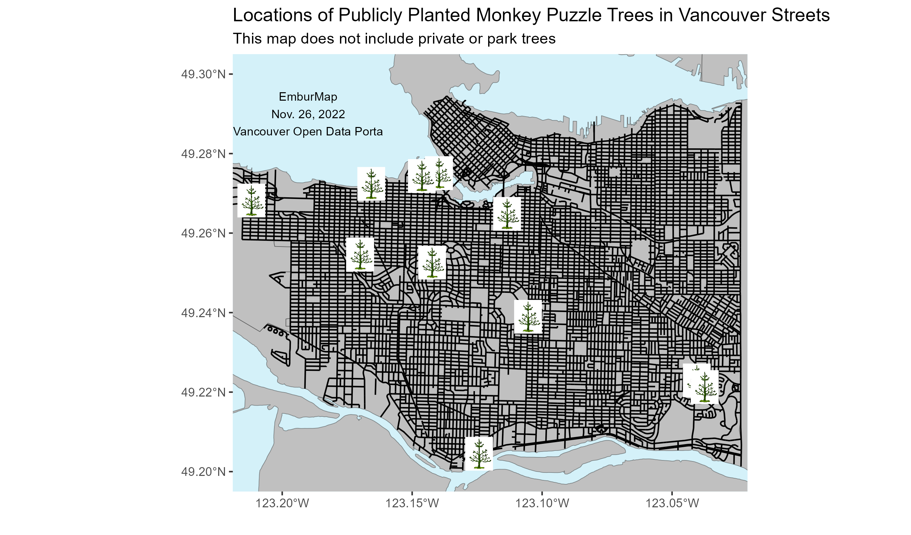
November 25, 2022 - Streetlight Density in Vancouver
A density map based on the distribution of streetlights in the city of Vancouver (and only Vancouver). The streetlight data was collected from the Vancouver Open Data Portal.

November 19, 2022 - Comparing Tree Segmentation Algorithms with a plot in Pacific Spirit Park, Vancouver
All LiDAR data was acquired through LidarBC. I wanted to compare the tree segmentation algorithms from the lidR package I have been using and from ForestTools, another package that someone in a previous post suggested I try. I cannot comment on which was more successful, but the point cloud image at the bottom used the Dalponte2016 algorithm.
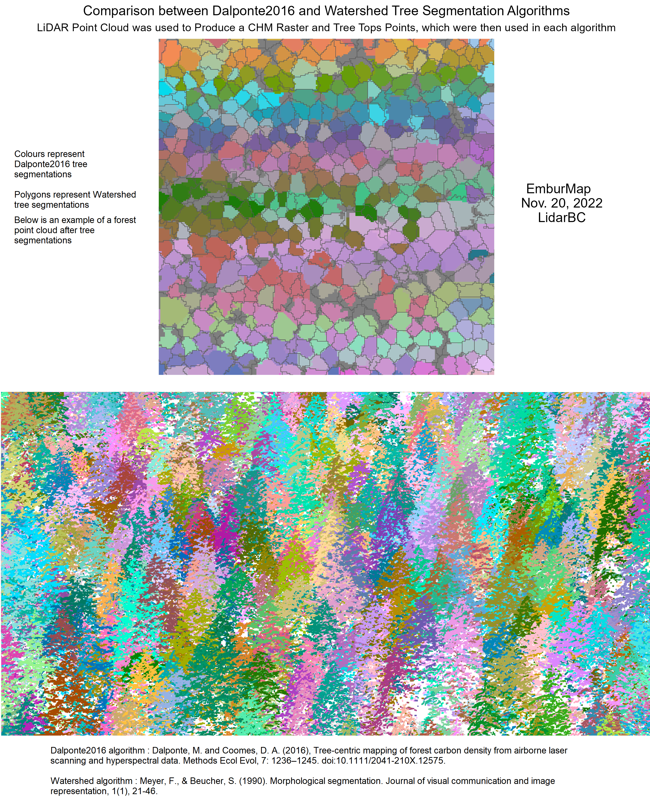
November 18, 2022 - Tree Tops detected with LiDAR using the Individual Tree Detection Algorithm in Pacific Spirit Park, Vancouver
All LiDAR data was acquired through LidarBC. I calculated tree tops using the LiDAR data to explore how many I would find in Pacific Spirit Park.
Popescu, Sorin & Wynne, Randolph. (2004). Seeing the Trees in the Forest: Using Lidar and Multispectral Data Fusion with Local Filtering and Variable Window Size for Estimating Tree Height. Photogrammetric Engineering and Remote Sensing. 70. 589-604. 10.14358/PERS.70.5.589.
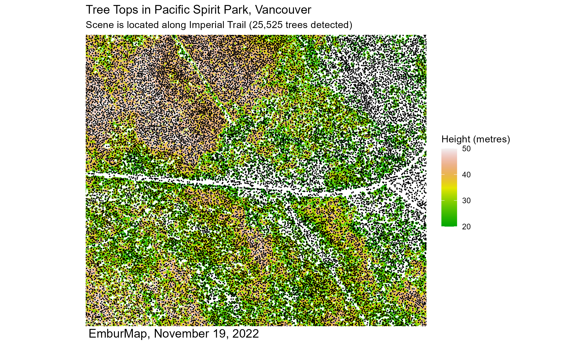
November 17, 2022 - Stanley Park Canopy Height Model, Vancouver
All LiDAR data was acquired through LidarBC. I tried making an inlet map presenting a zoomed in view of a section in the middle of the park that people may be familiar with.
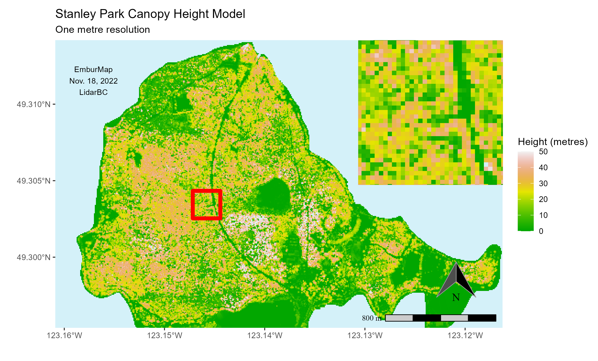
November 16, 2022 - Public Toilet Availability During Winter in Vancouver
All toilet data was obtained from the City of Vancouver Open Data Portal. It may not be up to date. Because there were various hours listed for each toilet, all data was simplified to the four categories.
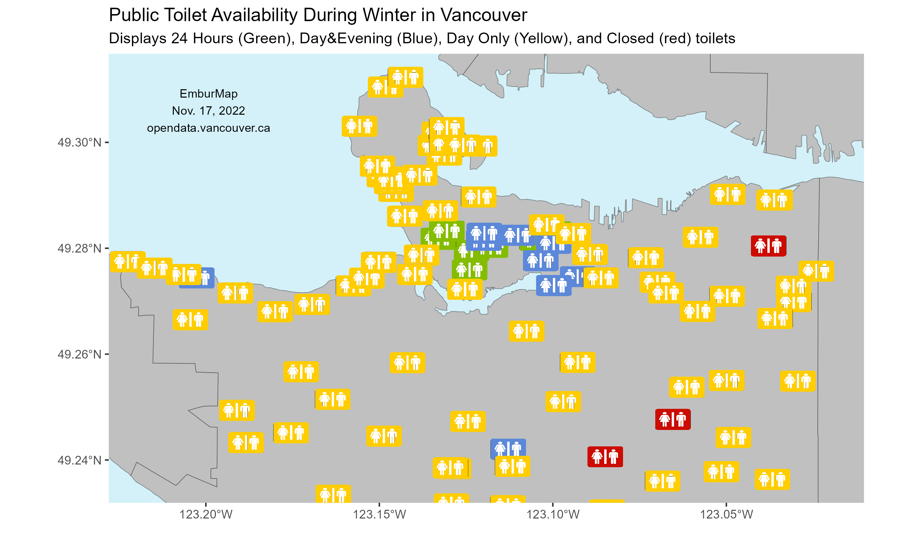
November 15, 2022 - Queen Elizabeth Park (Vancouver, BC) Canopy Height Model
All LiDAR data was acquired through LidarBC. The canopy height model was derived from the normalized tiles and represents the height of everything (but more specifially trees) if the ground was flattened.
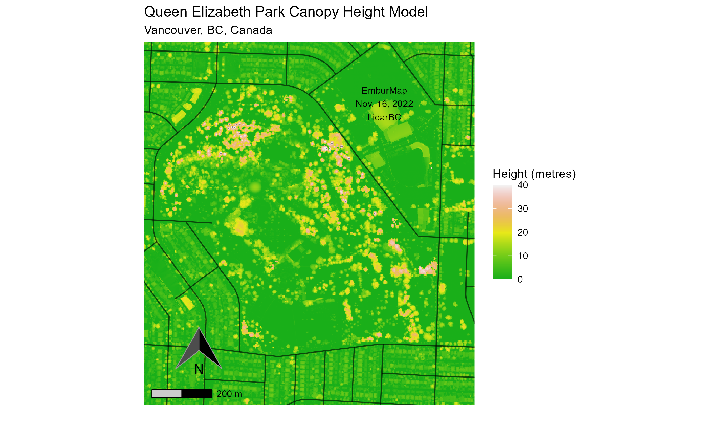
November 14, 2022 - Digital Terrain Model of Downtown Vancouver
All data was acquired through Statistics Canada and is based on results from the 2021 census. It is representative of the respondents who selected "Not married and not living with common-law" and displayed as a normalized ratio. If m = population of men, w = population of women, and r = normalized difference, r = (m - w) / (m + w)
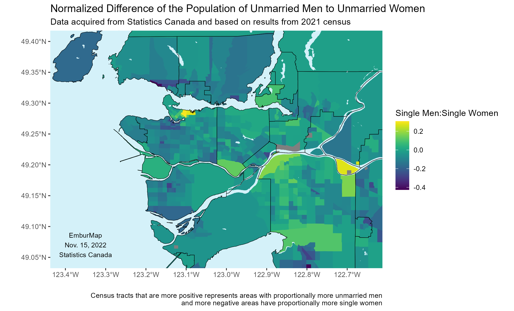
November 14, 2022 - Digital Terrain Model of Downtown Vancouver
All LiDAR data was acquired through LidarBC. After accessing a few tiles, I was able to digitally rasterize downtown Vancouver using a TIN model. This was an interesting process, and I'm sure it's not best way to do this, but making a DTM in an area with many buildings seems hard to get 100% accurate.
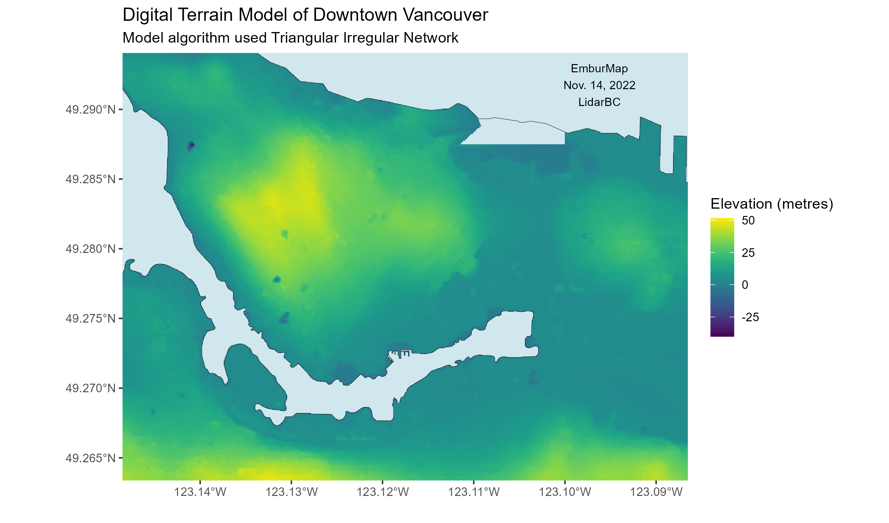
November 13, 2022 - Distance (as buffers) to the nearest Tim Horton's in Vancouver
All data was acquired through a process of web scraping the Tim Horton's website for their locations. All areas are representative of buffers based on euclidean distances.

November 12, 2022 - Religions with the most followers per census tract in the Metropolitan Vancouver Area (2021)
All data was acquired from Statistics Canada. It is representative of data from the 2021 census. The religions with the highest population of respondents within each census tract is represented in this map.
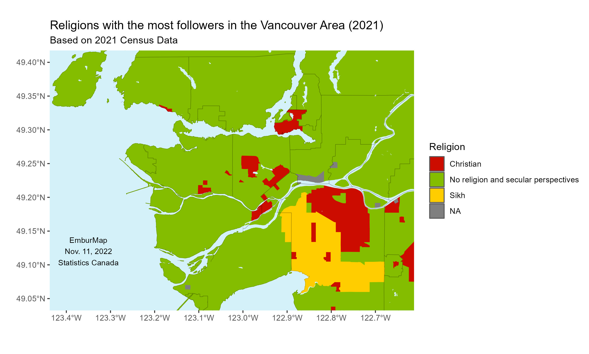
November 11, 2022 - Recreation, Open Space and Protected Natural Areas in Vancouver (2016)
All data was acquired from metrovancouver.org. It was compiled in 2016 and last updated on March 12, 2020. It shows the distribution of recreational, open, and protected natural spaces in Vancouver and it’s immediate surroundings.

November 10, 2022 - Median Income in the Vancouver Metropolitan Area in 2020 based on Census Data
Using the R package to access Canadian census data, I visualized the reported median income. The map represents all reported income from all individuals above the age of 15 within each census tract.

November 9, 2022 - Population Change in Metropolitan Vancouver Between 2016 and 2021
Using the R package to access Canadian census data, I visualized the difference in population between 2016 and 2021 based on census data.